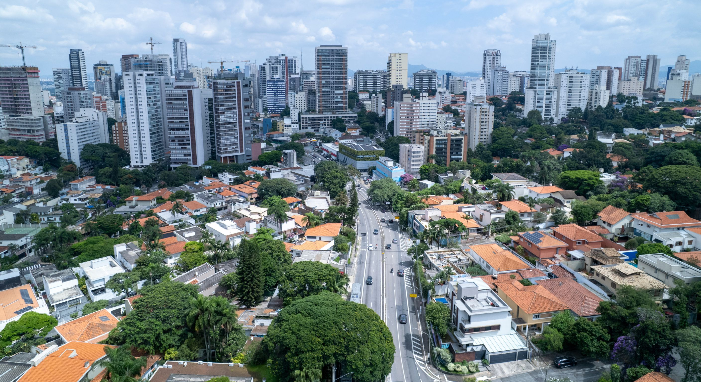
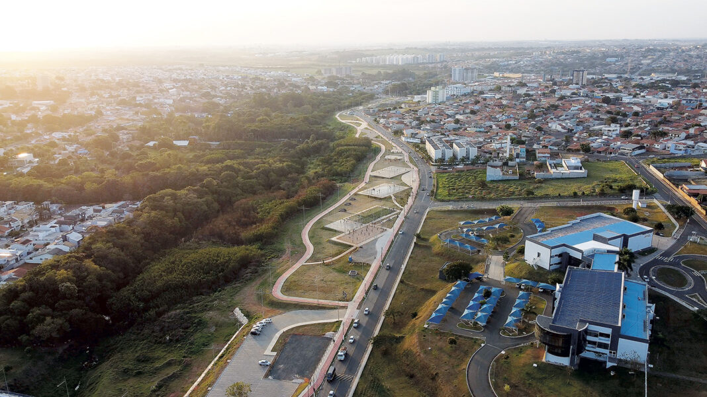
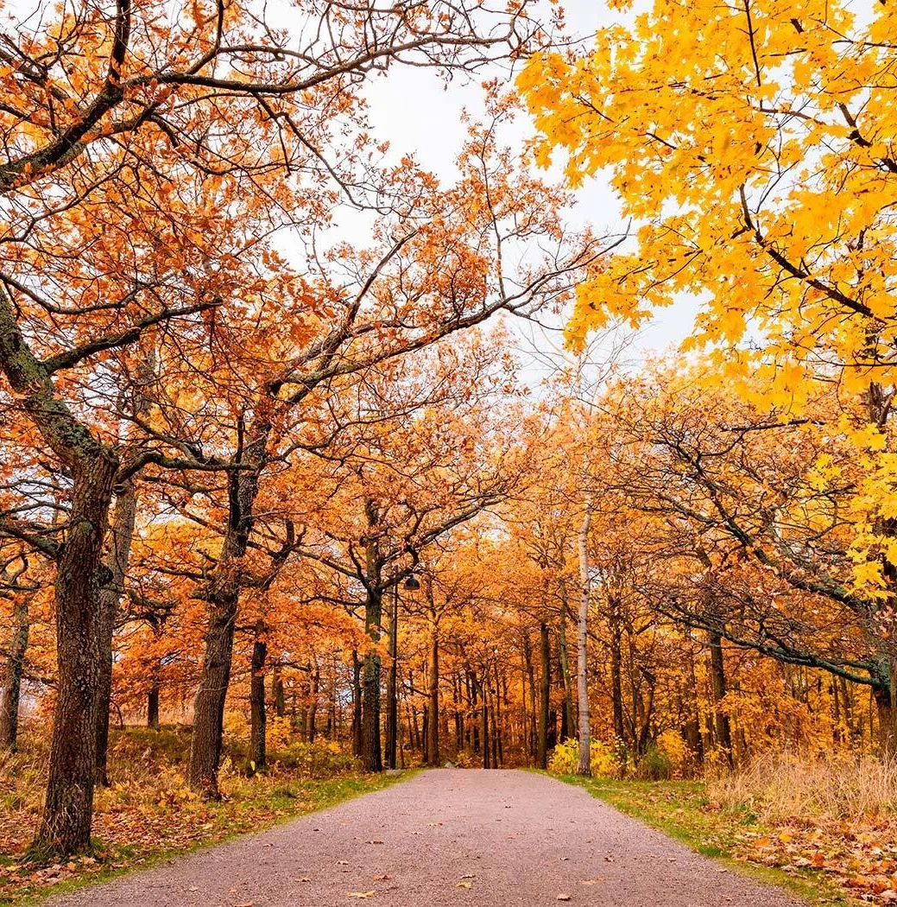
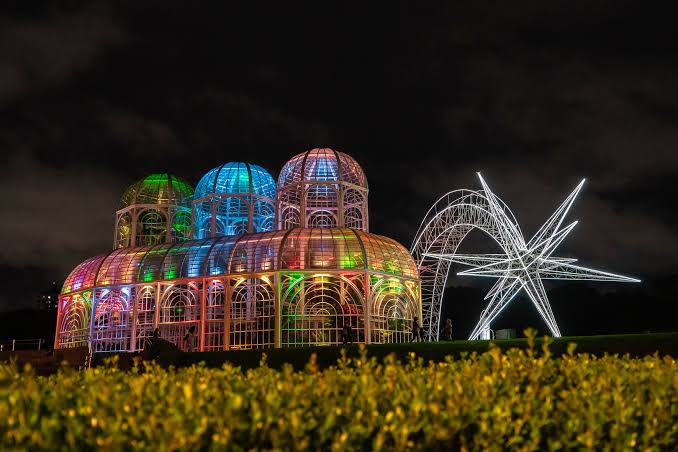
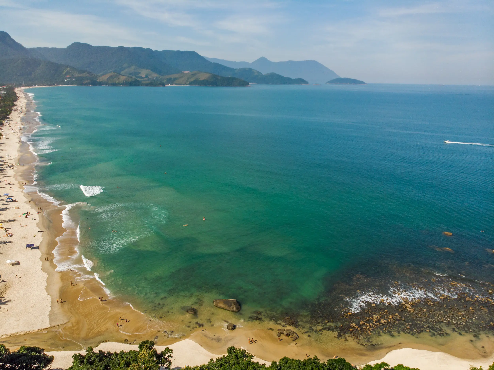

Jardim Botânico de Curitiba é um dos lugares mais conhecidos de Curitiba e fica
especialmente bonito durante a primavera. Nessa época, os jardins ganham mais cores com o florescimento de diversas espécies, criando um cenário ótimo para passeios.

Maresias é um dos destinos mais conhecidos do litoral norte de São Paulo e uma ótima opção para visitar durante o verão. A região combina uma extensa faixa de areia, mar azul, Mata Atlântica e belas paisagens naturais preservadas.
Ver mais...Campos do Jordão é um ótimo destino para conhecer durante o outono. a cidade é muito charmosa. Durante a visita, é possível conhecer parques e áreas naturais, caminhar pelo centro turístico, experimentar comidas típicas da região e aproveitar o clima mais frio.
Ver mais...